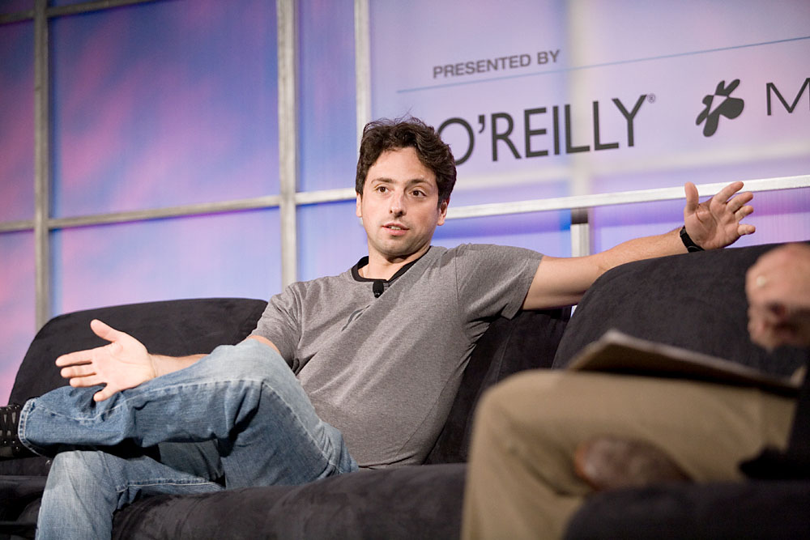
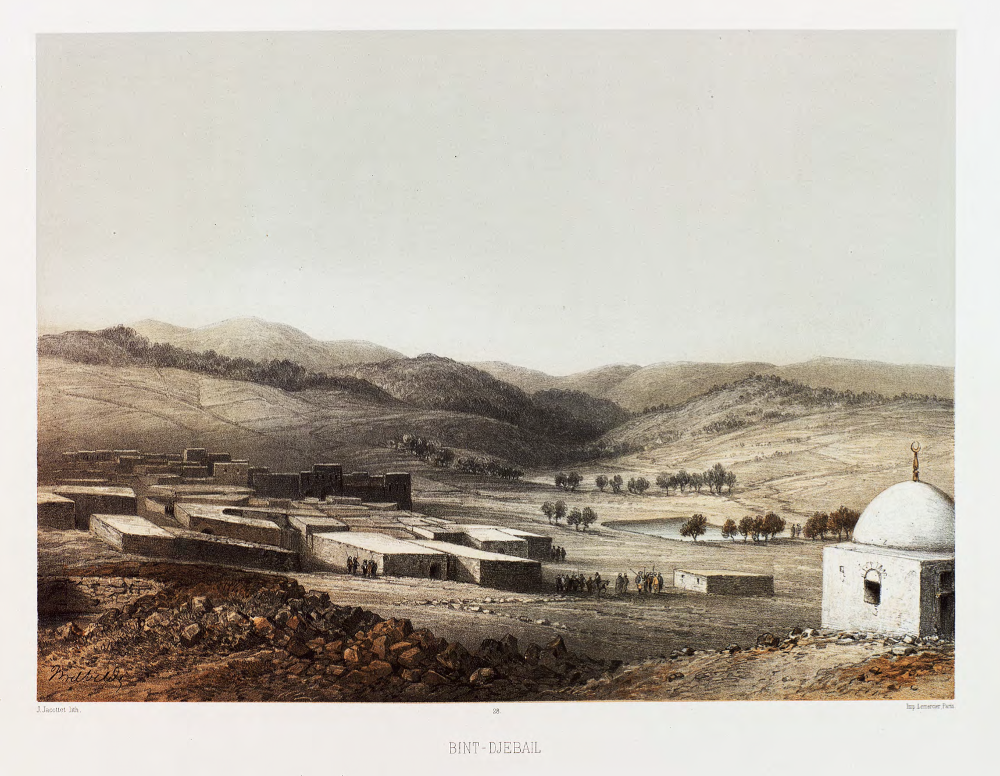

Vol. I · No. 86 · Thursday, August 13, 2026 · 19 items · ~18 min read
The Lakers change hands for a record twelve and a half billion, and Anthropic goes shopping before it goes public.
The Splash · Corporate · Los Angeles
Mark Walter sells the Lakers to Josh Kushner and Bob Iger for $12.5bn, ten months after taking control
Crypto.com Arena in downtown Los Angeles, the Lakers' home venue. The franchise is changing hands at the highest price ever paid for a controlling stake in an American professional sports team. — Troutfarm27, via Wikimedia Commons
Mark Walter agreed on Wednesday to sell the Los Angeles Lakers to a group led by Josh Kushner and Bob Iger for $12.5 billion, the highest price ever paid for control of an American professional sports franchise. Walter's group bought 27 percent of the team in 2021 at a $5.5 billion valuation and took full control less than a year ago at $10 billion, which means he is exiting a at a roughly 25 percent premium after about ten months. Kushner becomes the control owner and Iger, who ran Disney from 2005 to 2020 and again from 2022 to 2026, comes in alongside him. Kushner's vehicle is capped at 20 percent under NBA cross-ownership rules, so the fund and the man are on different sides of the cap table.
The tax bill is the part the price tag hides. Sportico's analysis puts the taxable gain somewhere between $1.89 billion and $2.5 billion depending on how the holding periods run, and federal and state capital gains of $1.1 billion to $1.3 billion against it, which would leave after-tax proceeds near $1.7 billion. That is a real number on a headline of $12.5 billion, and it is the reason holding-period timing on a franchise stake is a structuring question rather than an accounting one. Iger told reporters the deal came together in three days. The transaction still needs the , whose next scheduled meeting is in September in New York, so the earliest realistic sign-off is several weeks out.
There is a subplot the price does not explain. Walter's empire is under parallel Justice Department and Securities and Exchange Commission inquiries over alleged tax fraud tied to insurance companies he controls, and he is not selling the Dodgers. Kushner and Iger had been working an NBA expansion bid in Las Vegas before pivoting to an existing franchise, which is the cheaper-sounding option that turned out to cost $12.5 billion.
"As lifelong NBA fans, we are deeply honored for the opportunity to become stewards of the Los Angeles Lakers, one of the most iconic sports franchises in the world."
— Josh Kushner and Bob Iger, joint statement, August 12
Why it mattersA 25 percent gain in ten months on an asset that does not trade is not a valuation signal, it is a scarcity signal. There are thirty of these licences, the national media money is contracted, and the only way to buy one is to find a seller who has a reason to sell. Walter had one.
Anthropic is in talks to buy an Israeli video and efficiency lab for $6bn, weeks before a possible listing
Anthropic is in talks to acquire , the Israeli real-time video and GPU-efficiency startup, at a valuation of roughly $6 billion, Bloomberg reported Thursday. The talks are not final and could collapse. If they close, it would be Anthropic's largest acquisition and one of the largest ever for an Israeli technology company. Decart has raised about $450 million in total, including a $300 million round in May 2026 at a $4 billion valuation, so $6 billion is a 50 percent markup on a fifteen-month-old price. The company was founded by Dean Leitersdorf and Moshe Shalev, both alumni, and its published work runs to real-time generative video, world models, and chip-efficiency software that lowers the cost of training and serving.
The timing is what makes this a capital-markets story rather than a product one. Anthropic is preparing a possible listing as soon as September or early October, with Morgan Stanley, Goldman Sachs and JPMorgan as lead underwriters, and it was valued at $965 billion in its May Series H. Buying an efficiency lab immediately before that window is a margin argument made in public: the same compute serves more demand, which is the single line an reader will care most about in a company whose largest cost is renting graphics cards. It also follows a run of Anthropic infrastructure commitments this month, including a $9.1 billion twenty-year lease at Riot Platforms' Rockdale campus and a Macquarie and GIC joint venture, which together sketch a company buying capacity in every form it comes in: owned, leased, and now engineered.
Why it mattersEvery AI company is a compute-cost story wearing a capability costume. If Anthropic pays $6 billion for a team whose product is getting more out of the same silicon, it is telling the market where it thinks the binding constraint is, and it is telling underwriters the same thing on the way to a roadshow.
Ukraine puts fifteen weapon systems into one strike on Novorossiysk, and wheat moves
Ukraine struck the naval base and commercial port at overnight on Tuesday and Wednesday, coordinating more than fifteen domestically produced strike systems in a single operation for the first time, including Palianytsia jet drones, extended-range anti-ship missiles, and unmanned surface vessels. Ukraine's security service and President Volodymyr Zelensky said four Russian Navy vessels were hit: the -carrying frigates Admiral Essen and Admiral Makarov, the patrol ship Vasily Bykov, and the research vessel Viktor Cherokov. Russian authorities declared a state of emergency and cut water to a city of more than 260,000. Al Jazeera put the toll at three killed; earlier counts cited two dead including an eight-year-old child.
The commercial consequence arrived faster than the military one. The strike disabled two of the port's grain terminals, and Chicago wheat futures rose about 3 percent, which is what happens when the world's largest wheat exporter loses loading capacity at its main outlet. Russia answered overnight with an Iskander-M, a Kh-31P, Kh-35 cruise missiles and 138 strike drones across ten Ukrainian regions. Zelensky called the operation a unique one and framed the deep-strike campaign as leverage rather than retaliation, saying Ukraine would keep pressing Russia toward peace through long-range and mid-range pressure. Novorossiysk was the last Black Sea harbour Moscow could treat as safe.
Why it mattersA grain terminal is a softer target than a frigate and a louder one. Kyiv has spent two years proving it can reach Russian hulls; hitting the export berths converts that reach into a price that shows up on a Chicago screen, which is a different kind of pressure and one that reaches capitals that do not follow the front line.
A founder walks back into the lab to fix the org chart, xAI buys third place on the leaderboard, and Europe's sovereignty champion starts hosting a Chinese model.
AI · Mountain View
Reuters: Sergey Brin drove Google's AI reshuffle after a rival's preview showed the gap

Sergey Brin, the Google co-founder who has stepped back into an operating role and, on Reuters' account, personally pushed DeepMind staff to accelerate Gemini. — James Duncan Davidson / O'Reilly Media, via Wikimedia Commons
Sergey Brin has spent recent months personally pressing Google's AI staff to go all in on , Reuters reported Wednesday, and the executive moves that followed have reorganised who decides what the model becomes. Brin addressed hundreds of employees at an April town hall urging the lab to move faster, specifically after a rival preview widened the perceived capability gap. At an all-hands on August 6, Alphabet told staff that some teams are moving out of DeepMind and into corporate Google. has emerged as the central figure shaping Gemini's direction with Brin's backing, while several existing lab leaders saw their influence reduced.
The proximate cause is unglamorous. Google delayed its next flagship Gemini release by two months after internal testing showed it still trailing rivals, particularly on coding, which is the benchmark class that converts most directly into enterprise revenue. Gemini briefly led the field in November 2025, and successive releases from competitors put it back into catch-up. Reuters built the account on people familiar with the internal dynamics rather than on-record comment, and Alphabet has not addressed it publicly. What is unusual is not the reorganisation but the mechanism: a co-founder with no operating title using town halls to redirect a research organisation, which works precisely because there is no formal process he has to go through.
Why it mattersFrontier labs are now being reorganised on the evidence of competitors' demos. That is a governance fact as much as a technical one, and it tells you the capability lead is short enough that a two-month slip is treated as an emergency rather than a schedule.
xAI ships Grok 4.6 with a 500,000-token window and a price that doubles at 200,000
xAI released Grok 4.6 on Wednesday, positioned as a coding and agent upgrade rather than a new frontier. It carries a 500,000-token and shipped immediately through the xAI API, Grok Build, Cursor, OpenRouter, Vercel and Cloudflare. Pricing is $2 per million input tokens and $6 per million output for short-context work, doubling to $4 and $12 once a prompt crosses 200,000 tokens, applied retroactively to the whole request. That last clause is the interesting one: it prices the long window as a separate product and makes the cost of an agent run a step function rather than a slope.
On benchmarks the jump is real but bounded. Grok 4.6 scores 1753 Elo on v2, up from 1526 for Grok 4.5, and 61 on the , up from 56, tying GPT-5.6 Sol Max and displacing Moonshot's Kimi K3 for third overall. On DeepSWE v1.1 it posts 65.9 percent, up 11.9 points, still short of Sol Max at 73. xAI attributes the gain to a longer supplemental training run on curated model-generated reasoning data, a revised optimiser, regenerated fine-tuning trajectories, and reinforcement learning across coding, kernel optimisation, web development and CAD-style agent environments.
Why it mattersThird place on a leaderboard nobody appointed is now a launch claim. The more durable signal is the retroactive long-context surcharge, which is the first clean admission that agent workloads and chat workloads are different businesses with different unit economics.
Mistral starts hosting a Chinese model and redefines what European sovereignty means
announced Wednesday that it will host third-party models on its own infrastructure, beginning with GLM-5.2 from , the commercial arm of Chinese lab Zhipu AI. GLM-5.2 is currently the most capable openly available open-weight model on the market, aimed at long-context coding and agentic work, and it now runs in public preview on Mistral's platform with the same regional data-residency controls and service guarantees the company applies to its own models. Documentation went up on Mistral's own docs site, which makes this a first-party integration rather than a rumour.
The awkwardness is deliberate. Mistral has built its identity on European sovereign AI, and it has just put a Chinese-trained flagship at the centre of that platform. Its answer is a redefinition: sovereignty is about who controls where a model runs, where the data stays, and who owns the compute, not where the weights were trained. Under that test a Chinese model on European infrastructure is sovereign and an American model on American infrastructure is not. The company is separately targeting up to one gigawatt of European compute by 2030, which is the capital expenditure that makes the argument load-bearing rather than rhetorical.
Why it mattersDigital sovereignty has spent three years as a procurement slogan with no test case. Mistral has now supplied one, and the definition it chose, control of infrastructure rather than provenance of weights, is the one that suits a company that owns data centres and does not own the best model.
The SEC decides a server hall is not a car loan, a listed home-flipper borrows at zero to shrink itself, and a copper-foil maker prices at the top.
Corporate · Washington
SEC staff exempt most data-centre bonds from securitisation rules, and the AI buildout gets a cheaper pipe
The Securities and Exchange Commission's headquarters at 100 F Street NE in Washington. Staff have told Latham & Watkins that most data-centre securitisations fall outside the asset-backed rules. — AgnosticPreachersKid, via Wikimedia Commons
Securities and Exchange Commission staff have clarified that a large subset of data-centre securitisations do not have to comply with -style disclosure or with , the post-crisis requirement that an issuer keep skin in the game. The position came in response to a request letter from Latham & Watkins. The reasoning is definitional rather than deregulatory: a data centre is not a financial asset that liquidates over time the way an auto loan or a mortgage does, so bonds backed by the physical infrastructure sit outside a regime built for pools of receivables. The carve-out is narrower than it sounds. secured by data centres still comply, because there the collateral is the mortgage, not the building.
Matt Levine used the change on Wednesday to walk through the mechanics, which are the same mechanics they have always been. "The basic business of finance is slicing up cash flows," he wrote. "You have some stuff, the stuff generates cash flows, you put the stuff in a box, the box issues securities to investors, the securities have claims on the cash flows." The question the SEC has answered is which boxes count. The context is that technology firms are financing AI capacity in the debt markets because capital expenditure has outrun free cash flow, and every incremental basis point of issuance cost matters at this volume. Removing risk retention from a growing asset class removes the mechanism that was supposed to keep origination standards honest, at exactly the moment origination is accelerating.
Why it mattersThe last time an asset class grew this fast with this little standardised disclosure, the box was full of mortgages. The distinction the staff drew is defensible on its own terms, and it is also the kind of definitional line that stops being defensible when volume finds it.
Opendoor borrows $650m at zero and spends a quarter of it buying back 5% of itself
Opendoor priced $650 million of due August 2030 and used part of the proceeds to execute the first share repurchase in its history. The notes pay no cash interest and the principal does not accrete, so the entire cost to investors is the option. The initial conversion rate of 212.2466 shares per $1,000 implies a conversion price of about $4.71, a 35 percent over Tuesday's $3.49 close. Alongside it, the company repurchased roughly 45.3 million shares, about 5 percent of shares outstanding, for $158 million at that same $3.49, under a board authorisation dated August 12.
The dilution management is the point. Opendoor spent about $52.5 million on transactions with an initial cap price of $6.98, a 100 percent premium to the same close, which pushes the effective point of net share issuance out to roughly $10.38, close to three times the current price. Net of the buyback and the capped call, about $440 million lands on the balance sheet at a 0 percent coupon for four years. The placement agent, J. Wood Capital Advisors, will itself buy about $25 million of common stock at a discount concurrently with the offering. Settlement is expected August 19, and Opendoor may redeem on or after February 22, 2029 if the stock trades above 130 percent of the conversion price. "Capital should create value for existing shareholders, not come at their expense," chief executive Kaz Nejatian said.
Why it mattersThis is a company with a $3.49 share price behaving like one that thinks the price is wrong, and paying real money in capped-call premium to make sure it is not punished if it is right. Whether that reads as conviction or as financial engineering depends entirely on what the housing book does next.
A Chinese copper-foil maker upsizes, prices at the top, and pops 18% on the NYSE
Londian Wason New Energy Tech, which manufactures for lithium batteries, upsized its offering to about 4.3 million from the 3.57 million in the prospectus, and priced at $22.00, the top of the range, raising $94.3 million gross and about $87.0 million net. Underwriters hold a thirty-day on a further 642,857 ADSs. The syndicate ran Cantor Fitzgerald, Huatai Securities (USA), CMB International Capital, US Tiger Securities, Fortune Securities, BOCOM International and VC Brokerage.
The shares began trading Wednesday under the ticker FOIL and opened at $26.00, up 18.2 percent, implying a valuation near $2.01 billion. The offering is expected to close Thursday. Both the upsizing and the top-of-range print are demand signals rather than pricing accidents, and they are worth noting in a year when US-listed China issuers have mostly had to concede on size or on price to get a deal done. Copper foil is a battery input, which puts the company in the same critical-minerals conversation that has otherwise been running through tariff policy rather than through the equity calendar.
Why it mattersAn upsized, top-of-range, 18 percent pop from a Chinese industrial issuer is a small deal carrying a large message about where the New York listing window currently sits. It is open, and it is open for exactly the kind of issuer that was widely assumed to be shut out.
The Solicitor General asks the Court to hurry, a US Attorney empanels an unusual grand jury, the law schools convene without their accreditor, and Greenberg Traurig moves house.
News · Washington · cross-spectrumLLCR
The Solicitor General tells the Court the mail-ballot case is running out of calendar
The west facade of the Supreme Court. The government's stay application in Trump v. California has been fully briefed for over a week with no ruling and under three months to Election Day. — Joe Ravi, via Wikimedia Commons
Solicitor General filed a supplemental brief Wednesday in Trump v. California, No. 26A124, urging the Supreme Court to act promptly on a stay application that has sat fully briefed for more than a week. At issue is Section 3 of the March 31 executive order on citizenship verification in federal elections, which bars the Postal Service from mailing ballots to voters not on a new federal enrolled-voter list. Judge Indira Talwani of the District of Massachusetts enjoined enforcement against 23 states and the District of Columbia through the November 3 midterms, and the First Circuit declined to stay her order, noting that neither the government nor the twelve states supporting the order had defended its legality. The immediate trigger for the filing was Talwani's separate ruling on Tuesday in League of Women Voters v. Trump, which imposed a nationwide injunction on the same section.
Sauer's argument is about the clock rather than the merits. The district court's orders, he wrote, "will effectively run out the clock on the government's ability to implement Section 3 of the Executive Order for the federal elections in November." The states opposing the stay make the mirror-image argument: granting it would let the Postal Service rush out what they call an unprecedented and legally indefensible voter-verification and ballot-interception programme with weeks to go. The Court has not ruled even on an administrative stay. Timing is itself the doctrine here, since the counsels against changing election rules close to an election, and the longer the stays silent, the closer the case gets to being decided by delay.
Why it mattersAn emergency docket that does not rule is still ruling. Whichever way the Court eventually goes, the operative decision in this case may turn out to have been made by the calendar, which is precisely the criticism the shadow docket has been accumulating for a decade.
Jeanine Pirro empanels a rare special grand jury while the president publicly criticises her
, the United States Attorney for the District of Columbia since May 2025, has convened a , the Washington Post reported Wednesday, citing three government officials. The panel is overseen by Steven Vandervelden, a close Pirro ally who has also run office inquiries into then-Federal Reserve chair Jerome Powell and into allegations that the Metropolitan Police Department skewed its crime statistics. There is no public indication yet of what or whom the panel is examining. What makes the mechanism notable is its output: a special grand jury can produce a report naming conduct without charging anyone, which is a prosecutorial instrument that does not require winning a case.
It arrives during an open clash with the White House. President Trump has criticised Pirro publicly over her office's decision to drop the vandalism case arising from damage to the Lincoln Memorial Reflecting Pool against former Olympic canoeist David Hearn, and has pressed the office more generally to bring prosecutions he wants brought. The is the one office that handles both routine local crime and the most politically exposed federal matters in the capital, which is why fights over its independence surface faster there than anywhere else. Neither the office nor the White House has said what the panel is for.
Why it mattersA tool that produces public findings without requiring proof beyond a reasonable doubt is exactly the tool a prosecutor reaches for when the cases she is being asked to bring will not survive a jury. Whatever this panel is examining, the choice of instrument is the story.
The law schools convene a task force on how they are regulated, and leave the accreditor off it
The announced a National Task Force on the Regulation of American Legal Education, roughly fifteen judges, legal educators, practitioners and higher-education leaders charged with examining how law schools are regulated and how well graduates are prepared to practise. The membership contains no representative of the and Admissions to the Bar, the Department of Education-recognised body that accredits American law schools. AALS chief executive Kellye Testy said the omission was deliberate. "We wanted the distance to take a fresh look," she said.
The context is that the accreditor's position is already under pressure from two directions at once. States have begun opening that route around the bar examination, and the political environment has made accreditation monopolies generally a target. A body representing the regulated deciding to study its own regulator, and structuring the study to exclude it, is a move with a clear direction of travel even before any findings exist. The AALS Council was briefed before the public announcement.
Why it mattersAnyone currently in law school is holding a credential whose value rests on an accreditation settlement that the schools themselves have just announced they want reopened. The interesting question is not whether the standards change but who ends up writing them.
Greenberg Traurig leaves Phillips Point after forty years for a full floor at 15 CityPlace
has signed a ten-year lease for the entire twelfth floor of 15 CityPlace, roughly 25,000 square feet in the tower Related Ross is building in downtown West Palm Beach, with move-in scheduled for autumn 2027 and space designed for more than eighty lawyers and staff. The firm is leaving Phillips Point, where it has sat for over forty years in about 30,000 square feet, and where Related Ross is itself mid-way through a $120 million renovation of the 448,914-square-foot complex it bought for $282 million in 2021. The 15 CityPlace and 10 CityPlace towers together run to roughly 500,000 square feet, backed by a $772 million secured in late 2025, with Cleveland Clinic already pre-leased into 125,000 square feet.
The symbolism is doing as much work as the square footage. Greenberg Traurig was founded in Miami and now runs 51 offices and about 3,200 lawyers, and executive chairman Richard Rosenbaum started his career as the fourth lawyer in this same West Palm Beach office forty-one years ago. He framed the move around the market rather than the space, calling it a renewed personal commitment to work with Related Ross and other leaders "here in 'Wall Street South,' currently experiencing explosive growth in a thoughtful way." Phillips Point is not emptying behind them: MSCI has taken 7,500 square feet, the investment bank Solomon Partners 4,200, and Integrity Pro Consulting 1,300.
Why it mattersTen-year leases are the honest indicator in a market that generates a great deal of press-release optimism. A firm that has been in one building since before most of its current associates were born is committing through 2037 on the other side of the street, which is a longer position than any press conference.
A ceasefire that keeps demolishing buildings, drones back over Khartoum for the first time since May, and thirty-two governments sign the same page on Iran.
News · Zawtar al-Sharqiya · cross-spectrumLLCR
Israeli forces level a four-storey school in southern Lebanon, seven weeks into a ceasefire

Bint Jbeil in southern Lebanon, the district where Israeli forces demolished a school, a municipal building, a clinic and a nursery this week. — Wikimedia Commons
Israeli forces detonated and destroyed the four-storey Sheikh Naim Mahdi School in Zawtar al-Sharqiya, in Lebanon's , early Wednesday. The same operation destroyed the municipal building, a public school, a health clinic, a children's nursery and a number of homes, and Israeli forces separately struck an Ashura commemoration site. Overnight there were two large explosions in Haddatha and another in Beit Yahoun, in the same district. The mayor of Zawtar al-Sharqiya, Muhammad Ismail, told CNN it was the heaviest blow in a month of escalating demolitions.
Prime Minister said the incursions, demolitions and systematic destruction of homes, infrastructure and places of worship "represent a serious violation of the principles and rules of international law and international humanitarian law." The demolitions continue under the American-brokered , which trades a phased Israeli withdrawal from occupied Lebanese territory against Lebanese army deployment and Hezbollah's disarmament. Implementation talks in Rome have stalled. Israeli defence minister Israel Katz was reported the same day touting the destruction of housing in the south, which is the difficulty with a framework that is holding on paper: nothing in it obviously prohibits what is happening under it.
Framing noteThe Washington Post framed the day around the distance between Washington's account and the ground, headlining that Trump says the ceasefire is working while residents call it a "prison"; Breitbart framed the same facts as an occupation persisting because the Rome talks have stalled, placing the weight on the negotiating impasse rather than on Israeli conduct, and did not carry Salam's international-law characterisation at all.
Why it mattersA ceasefire is a legal instrument, and this one is being tested on the question of what it actually forbids. If demolition of civilian infrastructure sits inside the agreement rather than outside it, the framework's phased-withdrawal architecture is doing less work than its signatories claimed.
Drones return to Khartoum and Atbara for the first time since May as Sudan's war widens again
Suspected drones struck three Sudanese cities on Wednesday: an area west of Omdurman in the greater capital region where army bases sit, the industrial city of Atbara north of Khartoum, and , the besieged capital of North Kordofan. These were the first strikes on Khartoum and Atbara since May. Unconfirmed reports put at least two killed and six wounded in Al-Obeid, where the apparent target was a base housing the army's Fifth Infantry Division. The attacks continued into a second day Thursday, with anti-aircraft fire over Omdurman and explosions reported in central Khartoum and Khartoum North.
The strikes followed the RSF's announced capture of Qayssan, in the southern Blue Nile region near the South Sudan border, and came after the army took a key Kordofan city and stretches of the motorway toward Khartoum in July. Neither the RSF nor the Sudanese Armed Forces, under General , had claimed or commented on Wednesday's strikes as of reporting. The war is in its fourth year. It has killed tens of thousands, displaced roughly fourteen million people, and left an estimated twenty million facing hunger, which by United Nations measures makes it the largest humanitarian crisis in the world.
Why it mattersThe coverage is the story as much as the strikes are. A war producing the world's largest displacement crisis is running almost entirely on wire copy, with no original Western political reporting to compare framings against, which is what it looks like when a conflict falls below the threshold of sustained attention.
Thirty-two governments sign one statement on Iran's executions of protesters
The European Union and a bloc that grew to thirty-two signatories issued a joint statement Wednesday condemning Iran's executions in the strongest terms, led by EU High Representative and joined by the United Kingdom, France, Germany, Canada, Australia, New Zealand, Ireland, Italy and most of the EU. "The use of capital punishment to silence dissent, intimidate communities, and punish individuals exercising their human rights can never be justified," the statement reads, calling on Tehran to end the death penalty and release everyone arbitrarily detained. The United Nations human rights office counts at least 56 executions on national-security charges since March 19, including 27 tied to the protests that began in late December 2025 and intensified in January.
The separately documented 32 executions between March 19 and June 1, of which it attributes 24 to participants in the January protests and eight to members of the . The State Department condemned the same wave separately rather than joining the multilateral text, which is a difference of instrument rather than of position. The statement lands while Iran is simultaneously in a shooting conflict with the United States, and it is the accountability track running alongside the military one.
Why it mattersThirty-two signatures on a human rights statement is the cheapest thing in diplomacy and the only thing on the record. Its practical use is downstream, in the sanctions designations and asset-freeze listings that need a documented predicate before anyone can act on them.
Two unions write the settlement they would accept, the NFL's average franchise passes nine billion dollars, and Bethesda's union brings a rat to work.
Culture · Los Angeles
The DGA and IATSE tell California to settle the Paramount case, and attach nine conditions
The Melrose Gate at Paramount Pictures in Hollywood. The unions want the studio kept structurally separate from Warner Bros. as the price of a settlement. — Coolcaesar, via Wikimedia Commons
The Directors Guild of America and wrote jointly to California attorney general Rob Bonta and to Paramount leadership on Wednesday urging a settlement of the state's antitrust suit against the $110 billion Warner Bros. Discovery acquisition, on nine conditions. The first is the load-bearing one: Paramount and Warner Bros. remain separate studios with independent distribution, marketing and production arms, with the same separation applied to the television studios. Each studio would produce at least fifteen theatrical films a year with a minimum forty-five day, and preferably sixty day, exclusive before premium video on demand and 120 days before streaming. Paramount would keep its headquarters in Los Angeles, maintain HBO as a linear channel available on third-party distributors, license third-party theatrical films at no less than the prior five-year average, and hold United States production at the five-year average.
The letter, signed by DGA executive director Russell Hollander and IATSE president Matthew Loeb, landed a day after Paramount chief executive David Ellison threatened to begin relocating the company out of California on October 1 if Bonta will not negotiate. Judge Araceli Martinez-Olguin has set trial for March 2, 2027, closer to the state's proposed date than the studio's preferred November 2026, and the unions argue the delay is already costing work. "We are aware of productions that have been put on hold or canceled altogether," they wrote. Bonta has rejected Paramount's offer of a pledging thirty films a year for three years, saying he will take structural remedies only. The merged company would carry an expected $79 billion of debt, which is the pressure the unions say makes consolidation inevitable without a binding structural commitment.
Why it mattersTwo unions have just published a term sheet in an antitrust case they are not party to, and it is more specific than either side's public position. That is an unusual use of leverage, and it puts a number on the thing the guilds actually want, which is not competition in the abstract but forty-five days of exclusive theatrical exhibition.
The Dolphins cross $10bn as NFL franchise values jump a record 31% in a year
published its 2026 NFL valuations on Wednesday, putting the thirty-two franchises at $299 billion collectively and $9.34 billion on average, up 31 percent from $7.13 billion a year earlier and the largest single-year jump since the series began in 2020. The Dallas Cowboys lead for the seventh straight year at $15.5 billion, ahead of the Los Angeles Rams at $12.7 billion, the New York Giants at $12 billion, the New England Patriots at $10.4 billion and the New York Jets at $10.35 billion. The Miami Dolphins are one of four teams to cross $10 billion for the first time, alongside the Philadelphia Eagles, San Francisco 49ers and Las Vegas Raiders. The Cincinnati Bengals sit last at $7.4 billion, which is roughly double the league average of a few years ago.
Miami's move up is a real-estate story more than a football one. Sportico's method weights media-rights growth, stadium and land control, and local sponsorship and suite revenue, and it credits and the adjacent Miami Grand Prix and Miami Open holdings as drivers for the Dolphins specifically. The revaluation arrives in the same week as the Lakers' record $12.5 billion sale, and the two feed each other: a printed is the comparable every other league's valuation table then marks against.
Why it mattersA 31 percent one-year move in an asset class where almost nothing trades is a statement about the scarcity value of the licence, not about the football. For a Miami market that has spent a decade selling itself as Wall Street South, the stadium and the circuit and the tennis are doing more of that work than the record.
Bethesda's union plants 800 flags, one per laid-off colleague, for the Xbox chief's visit
Xbox chief executive Asha Sharma visited Bethesda Game Studios in Rockville on Tuesday to preview The Elder Scrolls VI, and the studio's union met her on the lawn. , the Communications Workers of America affiliate representing Bethesda staff, deployed , the inflatable used at union actions for four decades, and planted one red flag on the grass for every Xbox employee laid off under Sharma's tenure, roughly eight hundred of them. Management had told staff they could not face protest posters outward from their cubicles, so workers switched to balloons indoors.
The backdrop is July's confirmation that Microsoft will cut 3,200 jobs across its games division by the end of the fiscal year, beginning immediately at Obsidian, id Software and ZeniMax Online Studios, the fifth mass Xbox layoff in three years. CWA locals in the United States and Canada have filed legal action alleging Microsoft mishandled the process; CWA Canada president Carmel Smyth said the company "unlawfully fired people without giving notice to or discussing it with the union," which is a claim rather than a wrongful-dismissal one. Coordinated rallies are scheduled for August 18 outside Xbox studios in Irvine, Austin, Dallas, Seattle, Albany, Rockville, Hunt Valley, Montreal and Minneapolis.
Why it mattersGames unionised late and is now producing the most conventional labour theatre in technology, complete with the rat. The legal claim underneath it is narrow and procedural, which is usually where these fights are actually won.